Hier ist alles leicht.
Warm, hell, voller Bewegung. Die Gefühle, die man gern zeigt, wachsen hier – dicht unter dem Licht.
Rund die Hälfte des Sauerstoffs, den wir atmen, entsteht in dieser Schicht – durch winzige Algen im Wasser.
Eine Reise über 10.935 Meter
Ein Baum versinkt im Meer. Mit ihm alles, was leicht war.
Unten bleibt, was trägt.
شجرةٌ تغرق… لتجد جذورها
Warm, hell, voller Bewegung. Die Gefühle, die man gern zeigt, wachsen hier – dicht unter dem Licht.
Rund die Hälfte des Sauerstoffs, den wir atmen, entsteht in dieser Schicht – durch winzige Algen im Wasser.
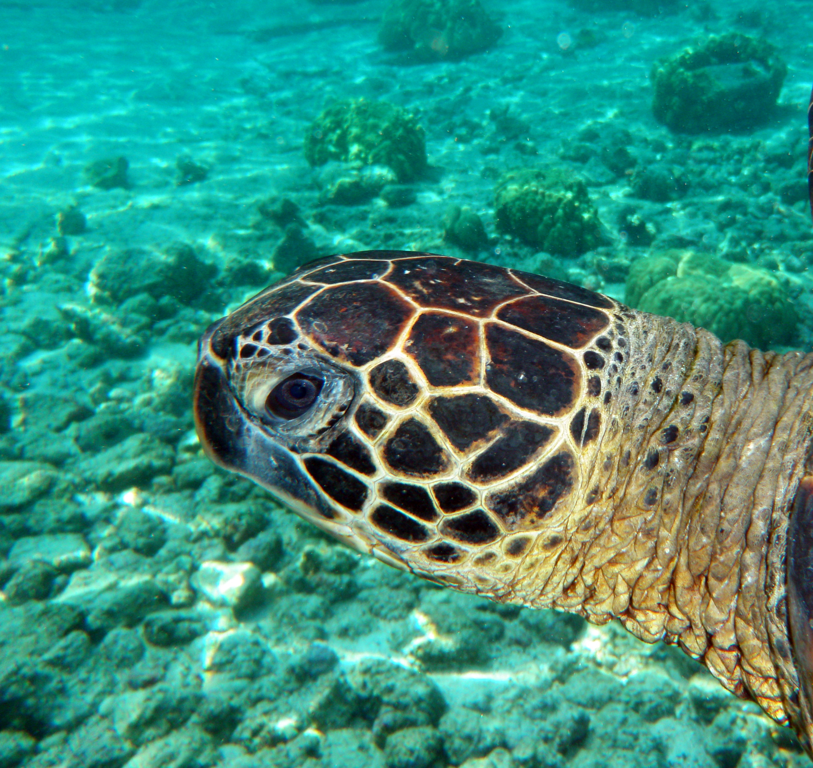
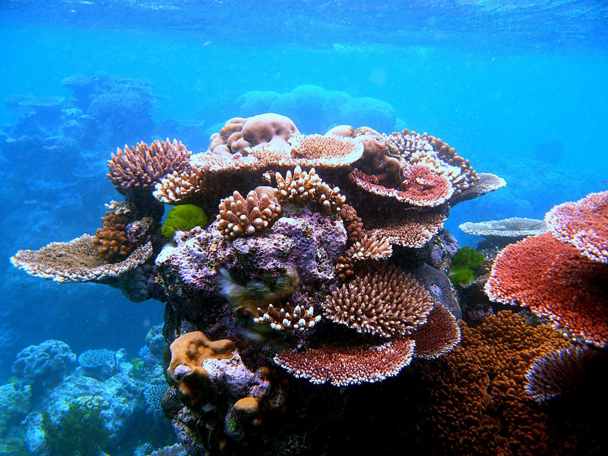
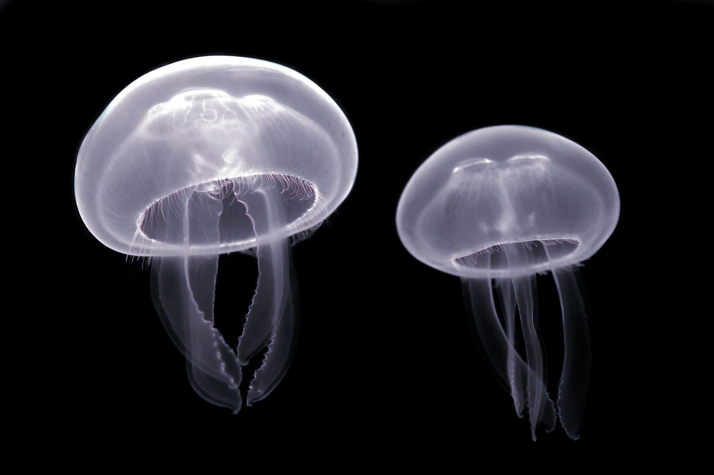
Nur ein Prozent des Sonnenlichts bleibt. Die Farben verschwinden, es wird blau und still.
Jede Nacht steigen Milliarden Tiere aus dieser Zone nach oben zum Fressen – und sinken vor Sonnenaufgang zurück. Die größte Wanderung der Erde.
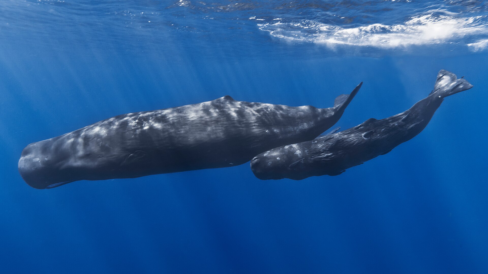
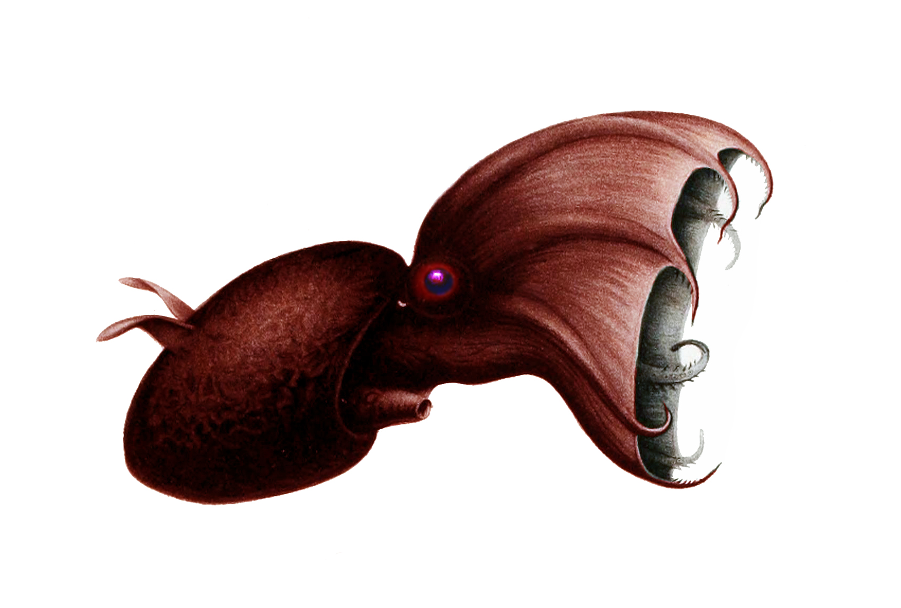
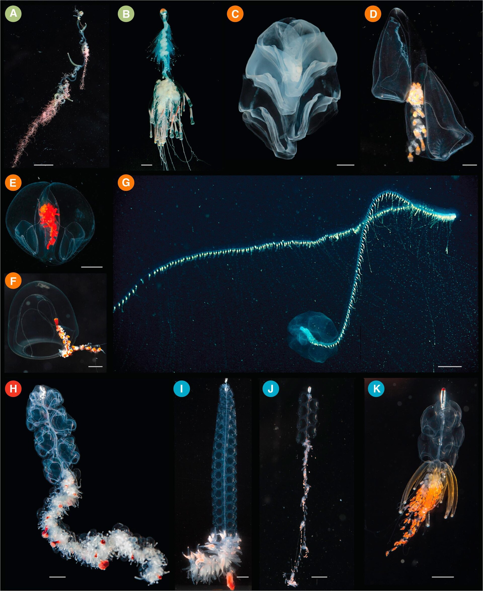
Kein einziger Sonnenstrahl erreicht diese Tiefe. Angst und Einsamkeit wohnen hier. Und doch beginnt hier das Licht von innen.
Rund drei Viertel der Tiere in der Wassersäule können selbst Licht erzeugen. In völliger Dunkelheit ist Licht eine Sprache.
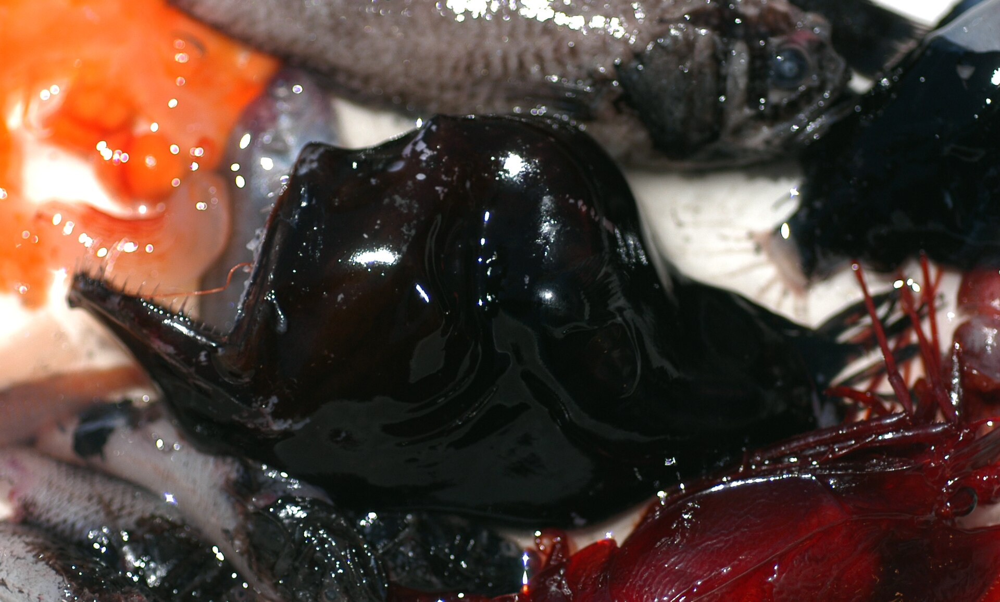
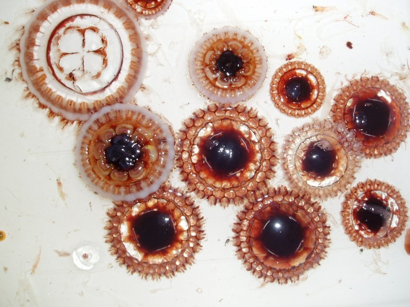
Nahe dem Gefrierpunkt, ein Druck wie 500 Atmosphären. Und trotzdem blüht hier Leben – um heiße Quellen, das nie die Sonne brauchte.
Hydrothermale Quellen wurden erst 1977 entdeckt. Ihr Leben lebt nicht vom Licht, sondern von Chemie: Chemosynthese.
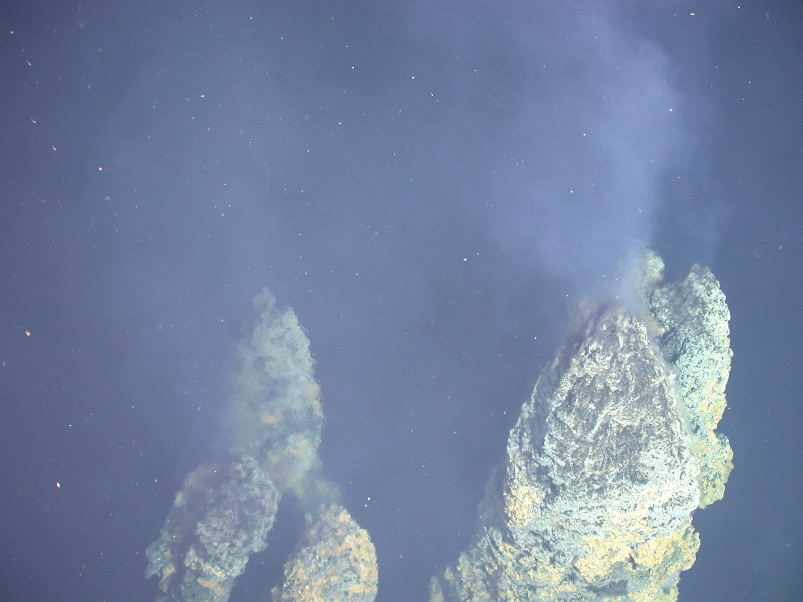
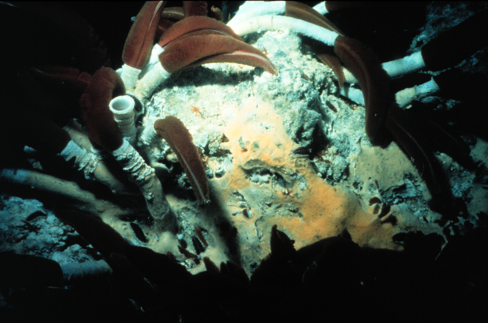
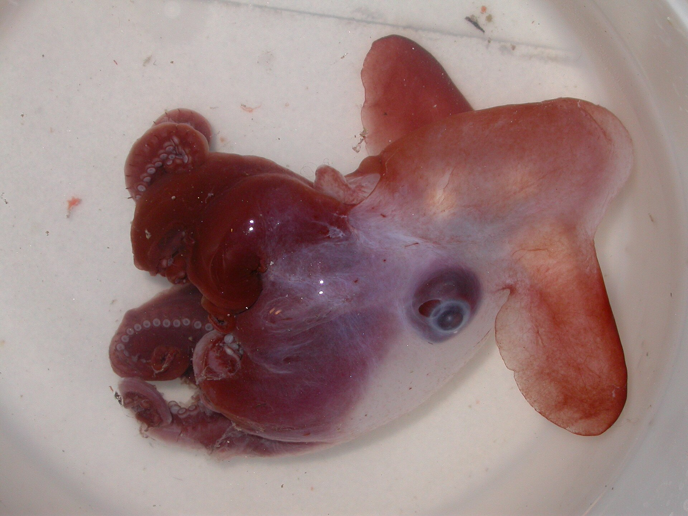
Kein Blatt, kein Licht. Aber dort, wo nichts mehr fällt, wächst das, was trägt.
Im Challenger-Tief lastet über eine Tonne auf jedem Quadratzentimeter. Und trotzdem lebt hier etwas.
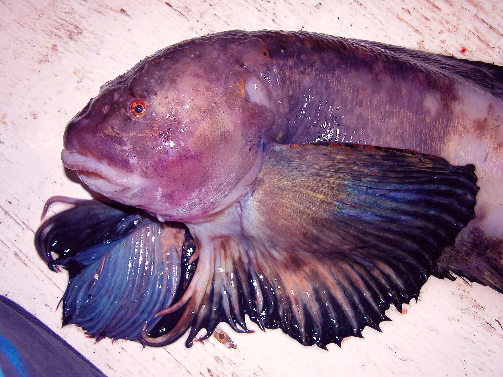
Challenger-Tief · 10.935 m
Jedes Gefühl hat seinen Ort – oben im Licht oder unten im Dunkeln. Keines davon ist falsch. Manche sieht man erst, wenn alles andere gegangen ist.
ما يضيء في العمق… يأتي من الداخل
Wieder auftauchenTiefenangaben gerundet; Temperatur und Druck sind Näherungswerte. Fotos: Wikimedia Commons / NOAA (Public Domain und CC, siehe unten).